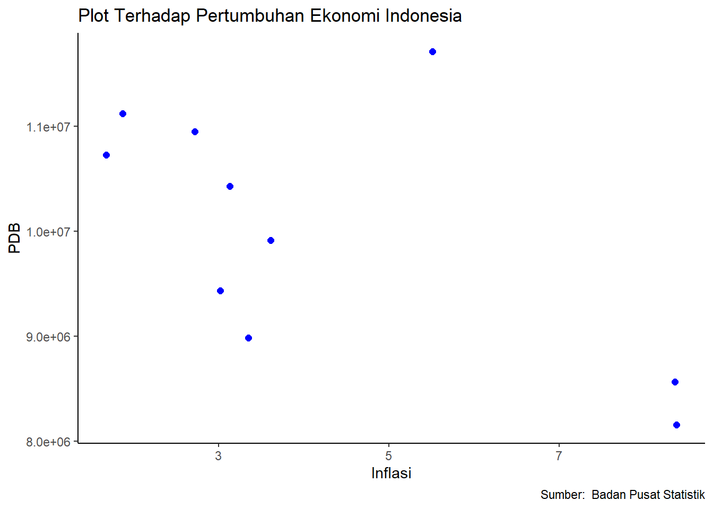

Analisis Pengaruh Inflasi Terhadap PDB Indonesia dalam 10 Tahun Terakhir (Tahun 2013-2022)
Metode Penelitian Politeknik APP Jakarta
Author
Muhammad Alfarizi (220204161)
Published
January 13, 2024
Logo Politeknik APP Jakarta
1 PENDAHULUAN
1.1 Latar Belakang
Dalam penelitian ini akan dibahas mengenai dampak inflasi terhadap pertumbuhan ekonomi dalam rentang waktu 2013-2022. Dalam konteks ekonomi makro, perhatian sering kali tertuju pada inflasi, yang dapat menentukan kebijakan bank sentral untuk menjaga stabilitas harga dan daya beli masyarakat. Inflasi yang tinggi dapat mendorong kenaikan suku bunga, merugikan iklim investasi, meningkatkan pengangguran, dan mengurangi konsumsi masyarakat, yang pada gilirannya mempengaruhi pendapatan pemerintah dan pertumbuhan ekonomi.
Konsep inflasi mencakup kenaikan harga secara terus-menerus yang terkait dengan perubahan dalam tingkat investasi, pengeluaran pemerintah, dan ekspor bersih. Dalam perspektif ekonomi, inflasi dianggap sebagai fenomena moneter yang dapat menyebabkan ketidakstabilan ekonomi. Pengendalian inflasi merupakan tujuan utama kebijakan makroekonomi di banyak negara untuk mempertahankan stabilitas harga dan mencapai pertumbuhan ekonomi yang berkelanjutan.
Pertumbuhan ekonomi, diukur melalui Produk Domestik Bruto (PDB), menjadi indikator penting dalam mengevaluasi kondisi ekonomi suatu negara. PDB mencakup nilai total barang dan jasa yang dihasilkan dalam suatu negara selama periode tertentu. Pertumbuhan ekonomi, baik peningkatan maupun penurunan, menjadi dasar bagi pembuatan kebijakan guna menjaga stabilitas perekonomian. Pendekatan ini sesuai dengan pandangan Samuelson (1998:390) yang menyatakan bahwa PDB adalah ukuran paling komprehensif dari total produksi barang dan jasa suatu negara.
Penelitian tentang keterkaitan antara inflasi dan pertumbuhan ekonomi menjadi penting karena keduanya merupakan indikator makro ekonomi yang krusial dalam menilai stabilitas perekonomian suatu negara. Memahami hubungan antara inflasi dan pertumbuhan ekonomi memungkinkan pengambilan kebijakan yang tepat untuk mencapai stabilitas ekonomi. Inflasi mencerminkan pencapaian tingkat harga yang stabil, sementara pertumbuhan ekonomi mencerminkan produktivitas suatu negara. Oleh karena itu, memahami hubungan antara keduanya memiliki relevansi signifikan.
Mengingat kompleksitas masalah inflasi dan hubungannya dengan pertumbuhan ekonomi, penelitian ini bertujuan untuk menyelidiki arah dan bentuk hubungan antara inflasi dan pertumbuhan ekonomi di Indonesia dalam periode sepuluh tahun terakhir.
1.2 Ruang Lingkup
Dalam penelitian ini akan dibatasi pembahasan mengenai bagaimana inflasi memiliki dampak terhadap pertumbuhan ekonomi, dengan fokus pada periode sepuluh tahun belakangan. Ruang lingkup penelitian ini akan terbatas pada penggunaan data yang diperoleh dari situs web Kementerian Dalam Negeri.
1.3 Rumusan Masalah
Berdasarkan pembahasan latar belakang di atas, dapat diidentifikasi beberapa indikator yang menjadi pokok permasalahan dalam penelitian ini. Rumusan masalah yang diajukan adalah sebagai berikut: 1. Bagaimana dampak inflasi terhadap pertumbuhan ekonomi Indonesia selama periode sepuluh tahun terakhir?
1.4 Tujuan Penelitian
Berdasarkan konteks latar belakang dan rumusan masalah, tujuan dan manfaat dari penelitian ini dapat dirinci sebagai berikut: 1. Tujuan penulisan paper ini adalah untuk memenuhi persyaratan tugas dalam mata kuliah Metodologi Penelitian sebagai pengganti UAS. 2. Selain itu, penelitian ini bertujuan untuk mengidentifikasi dan menganalisis sejauh mana dampak inflasi terhadap pertumbuhan ekonomi Indonesia dalam periode sepuluh tahun terakhir.
1.5 Manfaat Penelitian
Peneliti: Peningkatan pengetahuan dan wawasan peneliti terkait dengan topik yang diangkat dalam penelitian.
Masyarakat: Memberikan informasi kepada masyarakat umum tentang dampak inflasi terhadap pertumbuhan ekonomi Indonesia selama periode sepuluh tahun terakhir
── Attaching core tidyverse packages ──────────────────────── tidyverse 2.0.0 ──
✔ dplyr 1.1.4 ✔ readr 2.1.4
✔ forcats 1.0.0 ✔ stringr 1.5.1
✔ ggplot2 3.4.4 ✔ tibble 3.2.1
✔ lubridate 1.9.3 ✔ tidyr 1.3.0
✔ purrr 1.0.2
── Conflicts ────────────────────────────────────────── tidyverse_conflicts() ──
✖ dplyr::filter() masks stats::filter()
✖ dplyr::lag() masks stats::lag()
ℹ Use the conflicted package (<http://conflicted.r-lib.org/>) to force all conflicts to become errors
library(readxl)library(WDI)
2 STUDI PUSTAKA
2.1 Inflasi
Menurut Mankiw (2006:194), inflasi dianggap sebagai suatu hal yang wajar, namun terdapat variasi penting dalam tingkat kenaikan harga. Publik seringkali melihat inflasi yang tinggi sebagai masalah utama dalam perekonomian. Nanga (2005:247) mengkategorikan inflasi berdasarkan tingkat lajunya menjadi empat kategori, yaitu: 1. Inflasi Ringan: Merupakan inflasi yang belum mengganggu keadaan ekonomi secara signifikan. Inflasi ini dapat dikendalikan karena kenaikan harga-harga masih bersifat umum dan belum menimbulkan krisis ekonomi. Tingkat inflasi ringan biasanya berada di bawah 10% per tahun. 2.Inflasi Sedang: Meskipun belum membahayakan kegiatan ekonomi secara menyeluruh, inflasi sedang dapat mempengaruhi kesejahteraan masyarakat dengan pendapatan tetap. Tingkat inflasi sedang berkisar antara 10%-30%. 3.Inflasi Berat: Inflasi pada tingkat ini telah mengacaukan kondisi perekonomian, menyebabkan kecenderungan masyarakat untuk menyimpan barang dan enggan menabung karena bunga bank lebih rendah dari tingkat inflasi. Rentang inflasi berat berada antara 30%-100% per tahun. 4.Hyperinflasi: Merupakan tingkat inflasi yang sangat parah dan sulit dikendalikan bahkan dengan tindakan moneter dan fiskal. Hyperinflasi memiliki nilai di atas 100% per tahun dan dapat menyebabkan kekacauan ekonomi. Secara keseluruhan, inflasi memiliki dampak positif dan negatif. Inflasi yang ringan dapat berkontribusi positif terhadap perekonomian dengan meningkatkan pendapatan nasional dan mendorong minat masyarakat untuk menabung dan berinvestasi.
2.2 Produk Domestik Bruto (PDB)
Pertumbuhan ekonomi, seperti yang dijelaskan oleh Kuznets (1971), merujuk pada peningkatan kapasitas jangka panjang suatu negara untuk menyediakan berbagai barang ekonomi bagi penduduknya. Peningkatan kapasitas ini dapat dicapai melalui kemajuan teknologi, penyesuaian kelembagaan, dan ideologis sebagai respons terhadap berbagai tuntutan kondisi yang ada. Produk Domestik Bruto (PDB) menjadi faktor penting dalam mengukur pertumbuhan ekonomi, menggambarkan total produksi barang dan jasa dalam satu waktu tertentu di suatu negara atau wilayah. Ada tiga pendekatan utama untuk menganalisis kinerja ekonomi nasional berdasarkan PDB: 1. Pendekatan Produksi: Menekankan pada proses produksi dan sumbangan berbagai sektor ekonomi terhadap PDB. 2.Pendekatan Pengeluaran/Pembelanjaan: Fokus pada pengeluaran atau pembelanjaan total yang melibatkan konsumsi, investasi, pengeluaran pemerintah, dan ekspor bersih. 3. Pendekatan Pendapatan: Menitikberatkan pada distribusi pendapatan dan sumber pendapatan nasional. Dalam mengukur pertumbuhan ekonomi, terdapat beberapa alat yang dapat digunakan, sebagaimana disebutkan oleh M. Suparko dan Maria R.: 1. Produk Domestik Bruto (PDB): Merupakan total nilai barang dan jasa akhir dalam harga pasar. Meskipun bersifat global, PDB memiliki kelemahan karena tidak mencerminkan kesejahteraan penduduk. 2. PDB per Kapita atau Pendapatan Perkapita: Merupakan ukuran yang lebih akurat karena mempertimbangkan jumlah penduduk. Diperoleh dengan membagi PDB dengan jumlah penduduk. 3. Pendapatan Per Jam Kerja: Menilai tingkat kemajuan suatu negara dengan membandingkan pendapatan atau upah per jam kerja, khususnya untuk jenis pekerjaan yang sama.
3 METODE PENELITIAN
3.1 Data
Tahun
Inflasi
PDB (Miliar Rupiah)
2013
8,38
8.156.497,8
2014
8.36
8.564.866,6
2015
3.35
8.982.517,1
2016
3.02
9.434.613,4
2017
3.61
9.912.928,1
2018
3.13
10.425.851,9
2019
2.72
10.949.155,4
2020
1.68
10.722.999,3
2021
1.87
11.120.077,9
2022
5.51
11.710.397,8
dat<-read_excel('latihan1.xlsx')library(ggplot2)ggplot(data=dat, aes(x=X, y=Y))+geom_point(color='blue', size=2)+labs(title="Plot Terhadap Pertumbuhan Ekonomi Indonesia",x="Inflasi",y="PDB",caption ="Sumber: Badan Pusat Statistik") +theme_classic()

3.2 Metode analisis
Dalam penelitian ini, digunakan metode analisis yang terdiri dari metode kuantitatif dan pendekatan deskriptif. 1. Deskriptif metode deskriptif digunakan untuk memberikan gambaran sistematis dan faktual mengenai perkembangan setiap variabel inflasi dan pertumbuhan ekonomi. 2. Kuantitatif Analisis kuantitatif melibatkan perhitungan angka-angka untuk mengidentifikasi faktor-faktor yang memengaruhi hubungan antara inflasi dan pertumbuhan ekonomi suatu negara. Pendekatan kuantitatif diimplementasikan melalui penggunaan model regresi linier berganda.
4 PEMBAHASAN
4.1 Pembahasan masalah
Berdasarkan informasi dalam tabel, pertumbuhan Produk Domestik Bruto (PDB) Indonesia dari tahun 2013 hingga 2022 menunjukkan fluktuasi. Pada periode 2010-2011, PDB Indonesia mengalami pertumbuhan sebesar 18,26%, mencerminkan perkembangan ekonomi yang baik dengan pendapatan masyarakat yang dapat menopang konsumsi dan pertumbuhan yang stabil. Namun, dalam tahun-tahun berikutnya hingga 2015, PDB Indonesia mengalami penurunan yang berlanjut hingga mencapai titik terendah pada tahun 2015, yakni -3,36% atau sejumlah USD 860.854.235.065. Penurunan ini diatribusikan pada kebijakan pemerintah.Pada periode tahun 2016-2017, PDB Indonesia mengalami pertumbuhan sebesar 8,99%, yang dipicu oleh struktur ekonomi Indonesia yang mengalami perubahan spasial pada tahun 2017. Namun, di tahun 2020, PDB Indonesia kembali mengalami penurunan sebesar -5,40%, yang kemudian diikuti oleh kenaikan signifikan pada tahun berikutnya, yaitu sebesar 12,3%.
Call:
lm(formula = Y ~ X, data = dat)
Residuals:
Min 1Q Median 3Q Max
-1258283 -499093 -98107 357785 2114700
Coefficients:
Estimate Std. Error t value Pr(>|t|)
(Intercept) 11241305 639707 17.573 1.12e-07 ***
X -298658 134159 -2.226 0.0566 .
---
Signif. codes: 0 '***' 0.001 '**' 0.01 '*' 0.05 '.' 0.1 ' ' 1
Residual standard error: 986400 on 8 degrees of freedom
Multiple R-squared: 0.3825, Adjusted R-squared: 0.3053
F-statistic: 4.956 on 1 and 8 DF, p-value: 0.05664
Hasil estimasi Ordinary Least Squares (OLS) menggunakan model regresi multivariat menunjukkan hubungan antara variabel dependen yaitu pertumbuhan ekonomi, dan variabel independen yaitu inflasi.Lebih spesifik, hasil regresi menunjukkan bahwa setiap peningkatan sebesar 1 persen dalam tingkat inflasi akan menyebabkan penurunan pertumbuhan ekonomi sebesar -298658. Sebaliknya, penurunan tingkat inflasi akan meningkatkan pertumbuhan ekonomi sebesar 4.860e+12. Hal ini menunjukkan bahwa inflasi memiliki pengaruh signifikan terhadap pertumbuhan ekonomi Indonesia atau Produk Domestik Bruto (PDB). Adanya peningkatan inflasi, salah satunya dipicu oleh dampak pandemi Covid-19 di Indonesia, terlihat dari kenaikan harga bahan bakar minyak (BBM) dan sembako, penurunan minat beli masyarakat, serta peningkatan tingkat pengangguran yang signifikan. Semua faktor ini turut berkontribusi pada pengaruh inflasi terhadap pertumbuhan ekonomi negara.
5 Kesimpulan
Dapat disimpulkan bahwa terdapat korelasi antara dampak inflasi terhadap pertumbuhan ekonomi Indonesia selama periode 2012-2021. Hubungan antara pertumbuhan ekonomi Indonesia dan inflasi tergolong lemah. Inflasi menunjukkan korelasi negatif yang signifikan terhadap pertumbuhan ekonomi, mengindikasikan bahwa peningkatan tingkat inflasi memiliki dampak yang cukup besar dalam menurunkan pertumbuhan ekonomi Indonesia. Dengan kata lain, naiknya tingkat inflasi dihubungkan dengan penurunan signifikan dalam pertumbuhan ekonomi Indonesia.
6 Referensi
Nadirin, M. (2017). Hubungan antara Inflasi dan Pertumbuhan Ekonomi di Indonesia periode 1994.1-2013.4. Jurnal Ilmiah Mahasiswa FEB, 5(2), Article 2.
Ningsih, D., & Andiny, P. (2018). Analisis pengaruh inflasi dan pertumbuhan ekonomi terhadap kemiskinan di Indonesia. Jurnal samudra ekonomika, 2(1), 53-61.
Sari, M. D. R., Amboningtyas, D., & Fathoni, A. (2019). The Effect of Exchange Rate, Interest Rate and Amount of Money On The Indonesian Sharia Stock Index (ISSI) Modified with The Inflation (Empirical Study of Sharia Stocks Listed on the IDX for 2013-2017). Journal of Management, 5(5).
Salim, A., Fadilla, F., & Purnamasari, A. (2021). Pengaruh Inflasi Terhadap Pertumbuhan Ekonomi Indonesia. Ekonomica Sharia: Jurnal Pemikiran Dan Pengembangan Ekonomi Syariah, 7(1), 17–28.
Inflasi Menurut Kelompok Pengeluaran, 2013-2022 | Satu Data Perdagangan. (2022). Retrieved 13 January 2024, from https://satudata.kemendag.go.id/data-informasi/perdagangan-dalam-negeri/inflasi-2020
Produk Domestik Bruto (PDB) | Satu Data Perdagangan. (2022). Retrieved 13 January 2024, from https://satudata.kemendag.go.id/data-informasi/perdagangan-dalam-negeri/produk-domestik-bruto